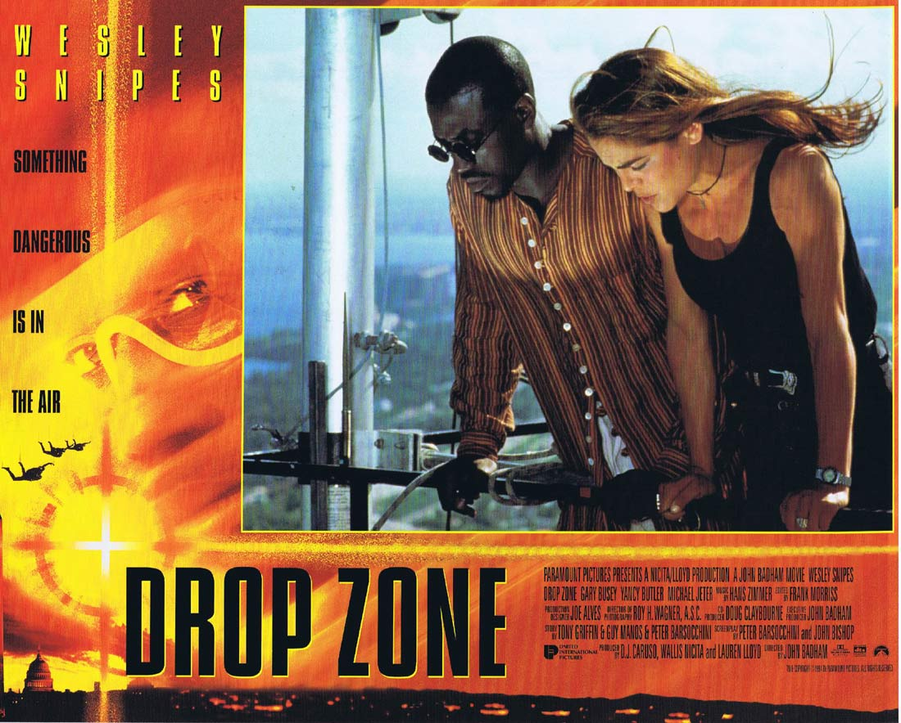
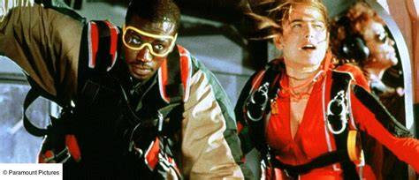
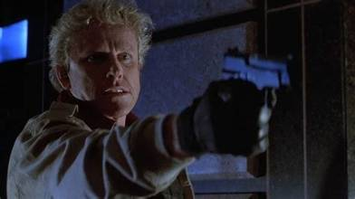

Celui-là partage la même origine que Passager 57.
Mon grand-père avait acheté les deux cassettes ensemble — Drop Zone et Terminal Velocity, un autre film de parachutisme qu'on gardera pour plus tard. Deux histoires de chute libre, découvertes le même après-midi, dans la même armoire.
Wesley Snipes, encore lui, mais cette fois dans les airs plutôt que dans un avion cloué au sol. Après l'avoir vu gérer une prise d'otages à 10 000 mètres, le revoir sauter d'un avion en marche avait quelque chose d'une suite logique — comme si le grand-père avait, sans le savoir, construit une petite double programmation Snipes.
Ce soir, deuxième chute de la soirée.

Drop Zone — affiche, 1994
Drop Zone.
1994. Réalisé par John Badham. Avec Wesley Snipes, Gary Busey et Yancy Butler.
Produit par Paramount Pictures, le film mise sur un concept encore peu exploité au cinéma à l'époque — le parachutisme comme terrain d'action à part entière, avec de véritables séquences de chute libre filmées en conditions réelles plutôt qu'en studio.
Wesley Snipes y incarne un agent fédéral qui infiltre le milieu du parachutisme sportif pour démasquer un réseau de criminels ayant développé une méthode d'évasion aussi spectaculaire qu'inédite — s'échapper d'un avion en plein vol, en parachute.
John Badham, déjà réalisateur de WarGames et Stakeout, apporte un savoir-faire solide dans la mise en scène d'action grand public.
Drop Zone est un film qui prend littéralement de la hauteur pour raconter son histoire.
1994.
Le cinéma d'action du début des années 90 cherche constamment de nouveaux terrains pour renouveler ses cascades. Après l'avion immobilisé au sol dans Passager 57, Hollywood explore cette fois le ciel lui-même — Drop Zone mise tout sur l'authenticité des séquences de parachutisme, avec une équipe de cascadeurs parachutistes professionnels et des prises de vues aériennes qui deviendront la marque de fabrique du film.
John Badham, réalisateur chevronné habitué du grand spectacle depuis Saturday Night Fever et WarGames, s'entoure d'une équipe technique spécialisée pour capturer ces scènes en conditions réelles — une prouesse technique rare pour l'époque, bien avant que les effets numériques ne permettent de simuler ce genre de séquences.
Pour Wesley Snipes, le film s'inscrit dans une période extrêmement dense de sa carrière — entre Passager 57 en 1992, Demolition Man la même année que Drop Zone, et Sugar Hill peu après. L'acteur enchaîne les rôles d'action avec une régularité qui le positionne déjà comme une valeur sûre du genre, plusieurs années avant Blade.
Face à lui, Gary Busey compose un antagoniste habité, dans un registre plus excentrique que la moyenne des méchants d'action de l'époque, tandis que Yancy Butler incarne une parachutiste professionnelle qui devient alliée de circonstance.
Le tournage nécessite des centaines de sauts réels, coordonnés avec une précision chorégraphique, pour obtenir des prises exploitables au montage.
Produit par Paramount, le film sort à l'hiver 1994, porté par cette promesse d'authenticité aérienne rarement vue jusque-là.

Wesley Snipes et Yancy Butler, en pleine chute
Pete Nessip est un agent fédéral traumatisé par un événement récent : lors d'un transfert de prisonnier en avion, une évasion spectaculaire lui a coûté la vie de son propre frère, également agent, tué dans l'opération.
Les responsables se sont littéralement volatilisés — sautant en parachute depuis l'avion en plein vol, dans un plan d'une audace inédite.
Déterminé à comprendre comment une telle évasion a pu être orchestrée, Pete infiltre le milieu très fermé du parachutisme sportif de compétition, où se croisent les meilleurs spécialistes de la discipline aux États-Unis.
Il y rencontre Jessie Crossman, parachutiste professionnelle méfiante, qui détient peut-être des réponses sur le réseau à l'origine de l'évasion — un groupe qui prépare déjà son prochain coup, plus ambitieux encore que le premier.
Pete va devoir apprendre à sauter avant de pouvoir espérer les arrêter.
Drop Zone repose sur une prémisse qui aurait pu sembler absurde sur le papier — s'évader d'un avion en parachute — mais que le film rend crédible par son engagement total envers l'authenticité physique de la discipline.
Contrairement à beaucoup de films d'action de l'époque qui privilégient les effets visuels ou les cascades filmées en studio, Drop Zone assume un choix de mise en scène presque documentaire pour ses séquences aériennes. La caméra suit littéralement les sauts, capturant la vitesse, le vertige, la précision technique du parachutisme de compétition. Cette approche donne au film une texture différente de ses contemporains, presque physique dans sa sensation de chute.
Wesley Snipes y trouve un registre légèrement différent de celui de Passager 57. Pete Nessip porte un poids émotionnel plus marqué — la culpabilité, le deuil, l'obligation d'apprendre une discipline qu'il ne maîtrise pas pour venger son frère. Snipes joue cette vulnérabilité sans jamais sacrifier la présence physique qui définit déjà sa marque de fabrique à l'écran.
John Badham construit son film comme une ascension progressive — littéralement et symboliquement. Chaque saut rapproche Pete un peu plus de la vérité, et le film culmine logiquement dans une séquence aérienne d'anthologie qui synthétise tout ce que le récit a mis en place.
Gary Busey, en antagoniste, apporte une intensité presque imprévisible qui tranche avec le classicisme du reste du casting — un choix qui donne au film une tension supplémentaire à chaque apparition du personnage.
Drop Zone ne réinvente pas la formule du thriller d'action des années 90.
Il trouve simplement un terrain que personne d'autre n'avait encore vraiment exploré à cette échelle.

Gary Busey, l'antagoniste du film
Drop Zone sort en 1994 dans une année particulièrement encombrée pour le cinéma d'action américain, et cette concurrence explique en grande partie son sort.
Speed, sorti la même année, redéfinit instantanément les codes du thriller d'action contenu et devient une référence immédiate du genre — écrasant au passage l'attention disponible pour des films au concept pourtant tout aussi original comme Drop Zone. True Lies, également sorti en 1994, capte une bonne partie du public friand de grand spectacle.
Le concept lui-même, aussi spectaculaire soit-il visuellement, reste relativement niche — le parachutisme de compétition n'est pas un univers immédiatement familier pour le grand public, contrairement à un avion ou un bus, décors instantanément reconnaissables par tous.
Wesley Snipes, encore une fois, voit sa filmographie de cette période progressivement recouverte par l'ombre immense que projettera Blade quelques années plus tard. Drop Zone devient l'un de ces films "d'avant", qu'on mentionne en passant plutôt qu'on explore vraiment.
Et malgré des séquences aériennes saluées à l'époque pour leur authenticité, le film n'a jamais bénéficié d'une réputation culte comparable à d'autres productions d'action de la décennie.
Une année de sortie trop chargée, un concept trop spécifique.
Ça suffit largement à expliquer l'oubli.
Parce que les séquences de parachutisme, filmées en conditions quasi réelles, restent impressionnantes même des décennies plus tard — une authenticité physique que le tout-numérique actuel a largement abandonnée, et qui donne au film une texture rare.
Parce que Wesley Snipes y explore un registre plus vulnérable, plus habité par le deuil, qui complète utilement le portrait qu'on peut se faire de lui juste avant Blade — pas seulement l'action pure, mais une vraie palette émotionnelle.
Et parce que Drop Zone appartient à cette catégorie de films d'action qui ont eu l'audace de chercher un concept réellement original plutôt que de recycler une formule déjà éprouvée — un pari qui méritait mieux que l'ombre dans laquelle Speed et True Lies l'ont relégué la même année.
Deuxième chute du duo Snipes de cette soirée VHS, et deuxième étape du fil "avant Blade" de cette saison.
Il y a cette image, vers la fin du film, où Pete saute enfin seul, sans instructeur à ses côtés — la caméra reste fixe sur son visage pendant la chute, avant que le cadre ne s'élargisse sur le vide entier autour de lui.
Deux cassettes achetées le même jour par mon grand-père, deux histoires de Wesley Snipes suspendu entre le ciel et le sol — Passager 57 coincé dans un avion qui ne peut pas atterrir, Drop Zone qui saute volontairement dans le vide pour avancer.
Terminal Velocity attendra une autre saison pour compléter ce trio de chutes libres.
La cassette est dans le lecteur. On rembobine.
Titre original
Drop Zone
Pays
États-Unis
Genre
Action
Durée
101 min
Producteur
Paramount Pictures
Avec aussi
Gary Busey · Yancy Butler
Fil conducteur
Wesley Snipes avant Blade (2/2)
Note
Séquences de chute libre tournées en conditions réelles
Regarder l'épisode
SOMEDAY — S2 EP. 09